Transformer Zoom Plan
구성 단위 Tree — Z(zoom 깊이 Z0–Z5) + P(재사용 primitive P1–P3) 2축 체계 · 참조 이미지 · Unit/Scene 매핑
1. Component Tree — 실제 zoom 단계 도출
Z0 Transformer — 전체 아키텍처
│
├─ Input Pipeline Encoder 입력
│ ├─ Text → Tokenization → Token IDs (Unit 01)
│ ├─ Token Embedding Lookup — E[id] (Unit 01)
│ ├─ Embedding Scaling — ×√dmodel (원 논문 Transformer 계열. 모든 모델 공통은 아님)
│ └─ + Positional Encoding + Dropout (Unit 09·S02/S03) · Dropout = training only
│
├─ Z1 Encoder Stack ×N Encoder repeated layer
│ └─ Z2 Encoder Layer 내부
│ ├─ Z3 Multi-Head Self-Attention (컨테이너)
│ │ └─ MHA 컨테이너 내부 — Z3 상세
│ │ ├─ Input X
│ │ ├─ Linear Projection same type ×3
│ │ │ ├─ Q = XWQ no activation
│ │ │ ├─ K = XWK no activation
│ │ │ └─ V = XWV no activation
│ │ ├─ Split Heads — dmodel → h × dhead
│ │ ├─ Z4 Attention Heads ×h → 단일 Head
│ │ │ └─ Z5 Scaled Dot-Product Attention 내부
│ │ │ ├─ Input: Q (무엇을 찾는가), K (무엇과 비교), V (섞일 정보)
│ │ │ ├─ Score: Q·KT → Attention Score Matrix
│ │ │ ├─ Scale: Score ÷ √dk
│ │ │ ├─ Mask 적용 — score에 −∞ 또는 큰 음수를 추가한 뒤 softmax
│ │ │ │ ├─ Padding Mask — PAD 토큰 무시 (Enc·Dec 공통)
│ │ │ │ └─ Causal Mask — 미래 토큰 차단 (Decoder만)
│ │ │ ├─ Softmax: row-wise → Attention Weight same op
│ │ │ ├─ Dropout (optional — attention weight 일부 약화 · training only)
│ │ │ └─ Weighted Sum: Attention Weight · V → Head Output
│ │ ├─ Concat Heads — h × dhead → dmodel
│ │ └─ Output Projection WO no activation
│ ├─ Dropout — sublayer output · training only, inference off
│ ├─ Residual Add — x + Dropout(Sublayer(x))
│ ├─ LayerNorm — Post-LN (원 논문). 현대 모델은 Pre-LN도 많음
│ ├─ Z3 Position-wise FFN
│ │ ├─ P1 Linear1: dmodel → dff (확장)
│ │ ├─ P2 Activation — ReLU (원 논문) / GELU (BERT·GPT) / SwiGLU (최신 LLM)
│ │ └─ P1 Linear2: dff → dmodel (축소) no activation
│ ├─ Dropout same op training only
│ ├─ Residual Add same op
│ └─ LayerNorm same op
│
├─ Decoder Input Pipeline Decoder 입력
│ ├─ Shifted-right Target Tokens — 이전 정답/이전 생성 토큰
│ ├─ Target Token Embedding Lookup
│ ├─ Embedding Scaling — ×√dmodel same op
│ └─ + Positional Encoding + Dropout same op
│
├─ Z1 Decoder Stack ×N Decoder repeated layer
│ └─ Z2 Decoder Layer 내부
│ ├─ Z3 Masked Multi-Head Self-Attention same type + causal mask
│ │ Q=K=V=decoder hidden states · Causal Mask + Padding Mask 적용
│ ├─ Dropout + Residual Add + LayerNorm same op
│ ├─ Z3 Cross-Attention (Encoder–Decoder) same type, 다른 source
│ │ ├─ Q = Decoder hidden state × WQ — WQ는 decoder cross-attn block의 parameter
│ │ ├─ K = Encoder Memory × WK — WK는 decoder cross-attn block의 parameter
│ │ ├─ V = Encoder Memory × WV — WV는 decoder cross-attn block의 parameter
│ │ ├─ Padding Mask — encoder memory의 PAD 무시
│ │ └─ Attention Weight · V → decoder가 encoder 정보 참조
│ ├─ Dropout + Residual Add + LayerNorm same op
│ ├─ Position-wise FFN same type
│ └─ Dropout + Residual Add + LayerNorm same op
│
└─ Output Head
├─ Decoder Final Hidden States
├─ P1 Linear (Vocabulary Projection) — dmodel → |V|
├─ Logits — vocab별 원점수 (training: logits → CrossEntropyLoss, softmax 내장)
├─ P3 Softmax / probability view — inference 디코딩 시 확률 표시·토큰 선택용
└─ Token Selection — argmax / sampling / beam search
Reusable Primitives — 여러 위치에서 반복 재사용되는 기본 단위
├─ P1 Linear — xW + b · post-process badge 필수 (none / Activation / Softmax / Sigmoid)
├─ Matrix Multiplication — QKT, Attn Weight·V
├─ P2 Scalar Activation — 숫자 하나를 누르는 함수
│ ├─ ReLU — 원 논문 FFN
│ ├─ GELU — BERT · GPT 계열
│ ├─ SwiGLU — 최신 LLM (LLaMA 등)
│ ├─ sigmoid — gate용 (0~1)
│ └─ tanh — 상태값용 (-1~1)
├─ P3 Distribution Function — 벡터 전체를 합=1 비율 리스트로 변환
│ ├─ Attention Softmax — token 위치 축 (row-wise)
│ └─ Output Softmax — vocabulary 축 (inference 디코딩용)
├─ Dropout — sublayer output, attention weight · training only, inference off
├─ Residual Add — x + F(x)
├─ LayerNorm — (x−μ)/σ × γ + β · Post-LN(원 논문) / Pre-LN(현대 모델)
│
Mask Types — Attention Score에 적용
├─ Padding Mask — PAD 토큰 무시
│ ├─ Encoder Self-Attention
│ ├─ Decoder Self-Attention
│ └─ Cross-Attention (encoder memory PAD)
└─ Causal / Look-ahead Mask — 미래 토큰 차단
└─ Decoder Masked Self-Attention
2. Zoom Levels — Z(깊이) + P(primitive) 2축
2축 분리: Z = zoom 깊이 (트리 depth와 단조 일치) ·
P = 재사용 primitive (깊이 무관, 여러 Z에서 등장).
구 L0–L9 단일 번호는 위치·타입·커리큘럼 3축을 혼용해 L8⊃L7 역전 등 5건의 불일치를 야기.
| Level | 축 | Scope | 화면에 보이는 것 | 참조 | Unit · Scene |
|---|
| ZOOM 깊이 (Z축) |
| Z0 | 위치 |
Transformer 전체 |
Encoder ⇄ Decoder 2 블록 + cross 연결 |
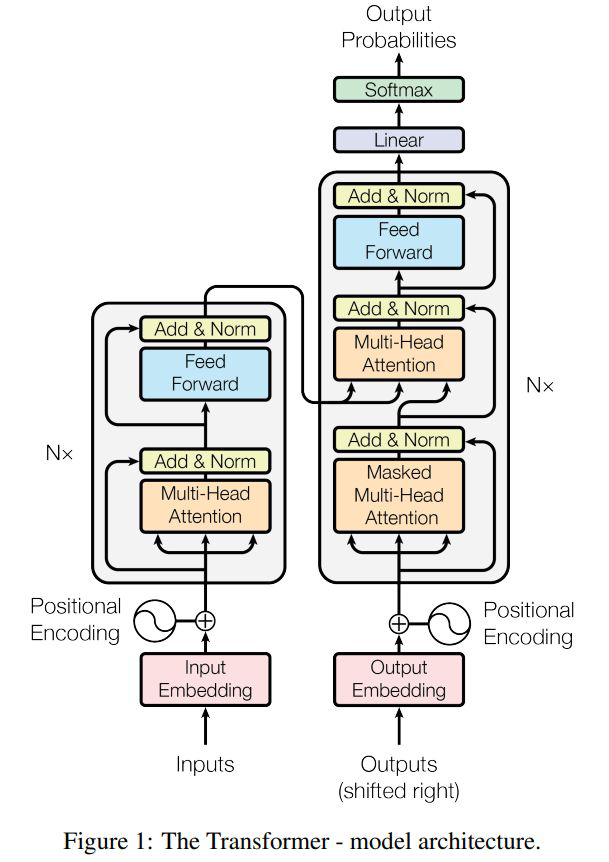 |
U09·S04, U10·S01 |
| Z1 | 위치 |
Enc/Dec Stack + Pipeline |
Encoder ×N / Decoder ×N + Input Pipeline · PE · Output Head |
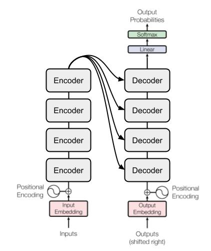 |
U09·S04/S11, U10·S09 |
| Z2 | 위치 |
단일 Layer 내부 |
Encoder: MHA → Add&Norm → FFN → Add&Norm
Decoder: + Masked Self, Cross-Attn
Post-LN(원논문) / Pre-LN(현대) |
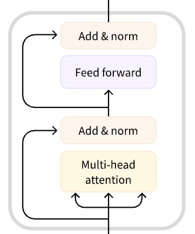 |
U09·S04, U10·S01 |
| Z3 | 위치 |
Sublayer 단위
MHA 컨테이너 · FFN · Add&Norm |
MHA 컨테이너: Linear W_Q/W_K/W_V → Attention Heads ×h → Concat → W_O
FFN: Linear₁ → Act → Drop → Linear₂
Add&Norm: Dropout → +x → LayerNorm
MHA·FFN·Add&Norm 모두 Z3 = 형제 (구 L3·L8 비대칭 해소) |
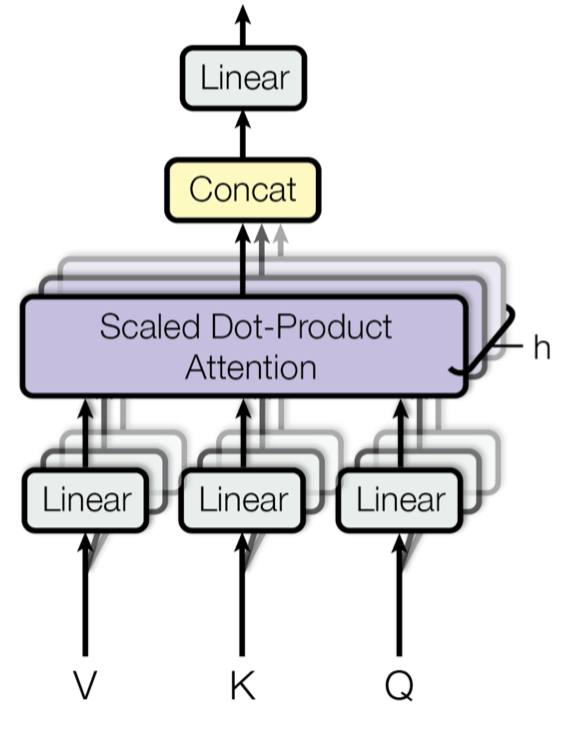
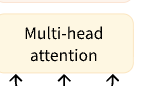 |
U07, U08, U09·S05/S08 |
| Z4 | 위치 |
단일 Attention Head |
head i: Linear W_Qⁱ/W_Kⁱ/W_Vⁱ → Q_i/K_i/V_i → SDPA → z_i
head마다 다른 weight → 다른 관점 |
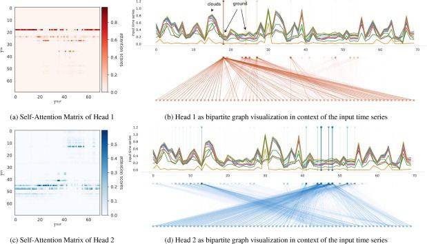
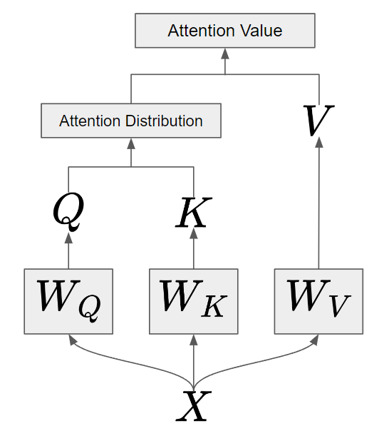 |
U07·S02–S07, U08·S01–S08 |
| Z5 | 위치 |
SDPA 커널 |
MatMul(QKT) → Scale(÷√dk) → Mask(−∞) → Softmax → Dropout → MatMul(×V) |
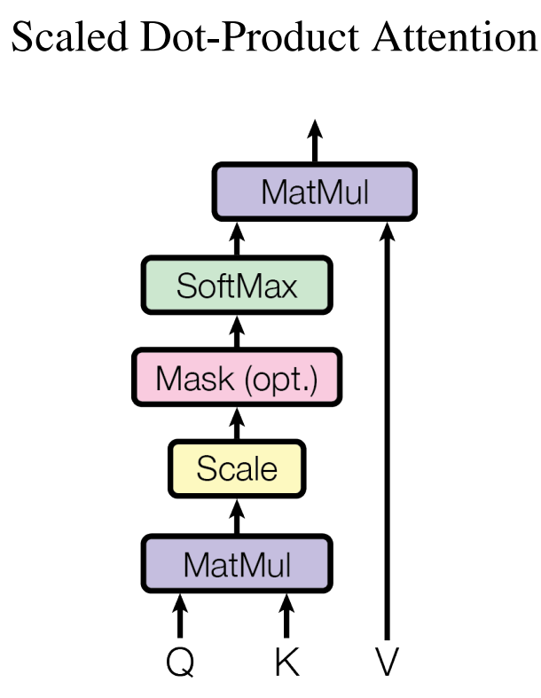 |
U07·S04–S06, U10·S02 |
| 재사용 PRIMITIVE (P축) — 깊이 무관, 여러 Z에서 등장 |
| P1 | 타입 |
Linear (xW+b) |
공통 구조 · post-process: none / Activation / Softmax
등장: Output Head(Z1) · MHA projection(Z3) · FFN Linear(Z3) · Head W_Qⁱ(Z4) |
전용 참조 없음
(범용 primitive) |
U02·S01, U07·S02, U08·S05 |
| P2 | 타입 |
Scalar Activation |
z → f(z) 원소별 비선형
ReLU / GELU / SwiGLU / sigmoid / tanh
등장: FFN 내부(Z3) |
전용 참조 없음
(범용 primitive) |
U02·S02–S07 |
| P3 | 타입 |
Distribution Fn (Softmax) |
벡터 → 합=1 확률 분포
등장: SDPA Softmax(Z5) · Output Head(Z1) |
전용 참조 없음
(범용 primitive) |
U02·S07, U07·S05 |
Zoom 탐색 방향
Top-down (해부도 진입): Z0 → Z1 → Z2 → Z3 → Z4 → Z5
Bottom-up (구성 요소 이해): P2/P3 → P1 → Z5 → Z4 → Z3 → Z2 → Z1 → Z0
커리큘럼 순서 (실제 제작): P2·P3(U02) → Z3 FFN(U03) → P1(U07) → Z5(U07) → Z4(U08) → Z3 MHA(U09) → Z2→Z1→Z0(U09) → Decoder(U10)
규칙: 처음 등장 시 open 해부 → 이후 same type으로 collapsed 재사용 → 차이점만 open
2축 원칙: Z축 = 트리 depth와 단조 일치 (역전 없음) · P축 = 깊이 무관 재사용 (등장 위치만 다름)
3. 참조 이미지 갤러리
3-1. Transformer 구조 (Z0–Z5)
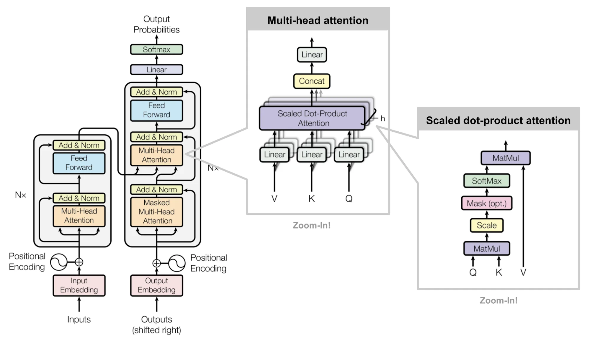
Z0→Z5 논문 Fig 1 + Zoom-In 패널 — semantic zoom 경로 원형 (논문)
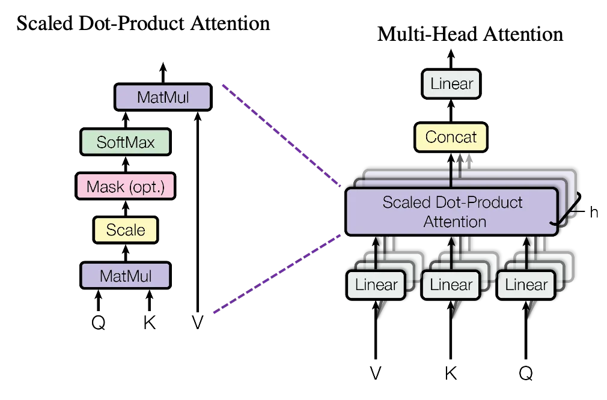
Z3·Z5 논문 Fig 2 — SDPA(좌) + MHA 컨테이너(우) (논문)
 Z2 Encoder(2 sublayer) ‖ Decoder(3 sublayer) — Enc-Dec Attention 별도 sublayer (Illustrated Transformer)
Z2 Encoder(2 sublayer) ‖ Decoder(3 sublayer) — Enc-Dec Attention 별도 sublayer (Illustrated Transformer)
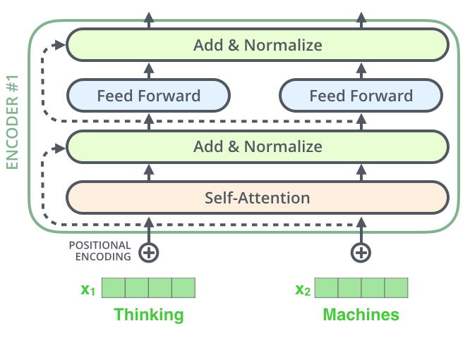
Z2–Z3 Encoder 상세 — Self-Attn → Add&Norm → FF(토큰별) → Add&Norm + 점선 skip (Illustrated Transformer)
Z0–Z2 원논문 Figure 1 — Transformer 전체 아키텍처
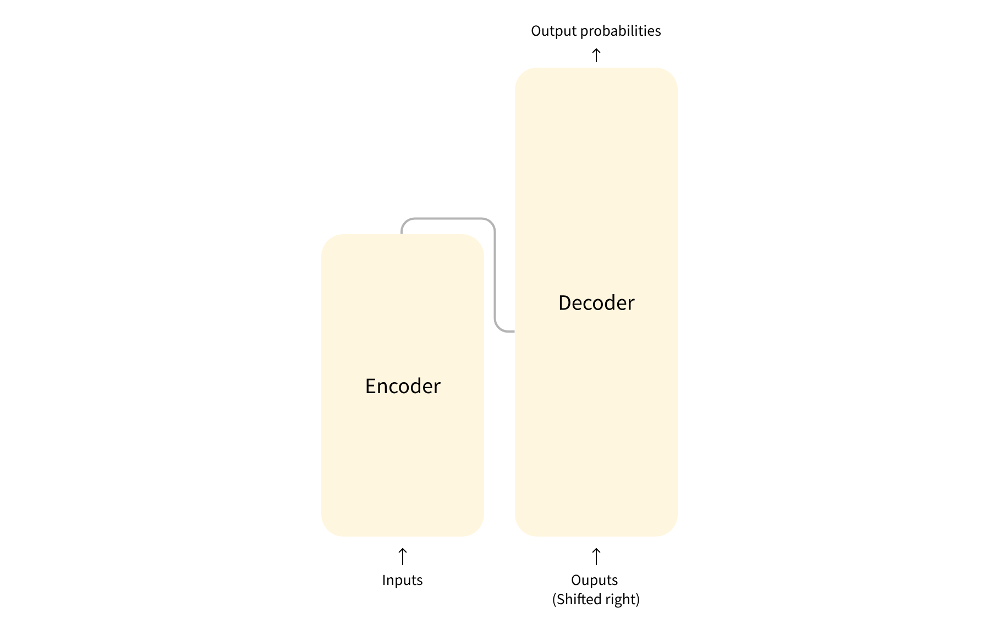
Z0 Encoder ⇄ Decoder (추상)
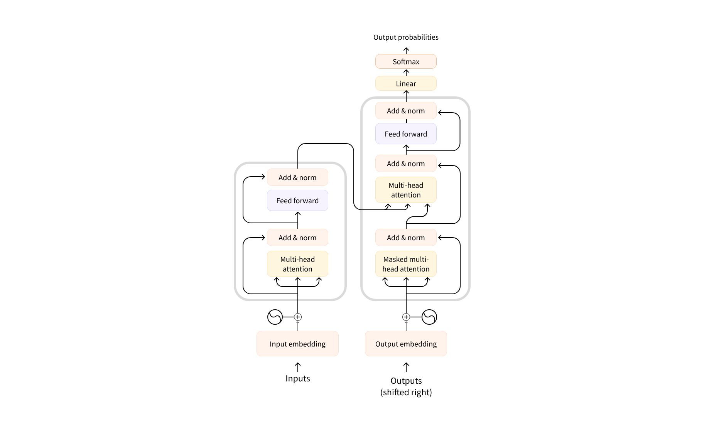
Z0–Z2 전체 annotated
Z1 Encoder ×N / Decoder ×N 쌓인 구조
Z2 Encoder layer 내부 (MHA → FF)
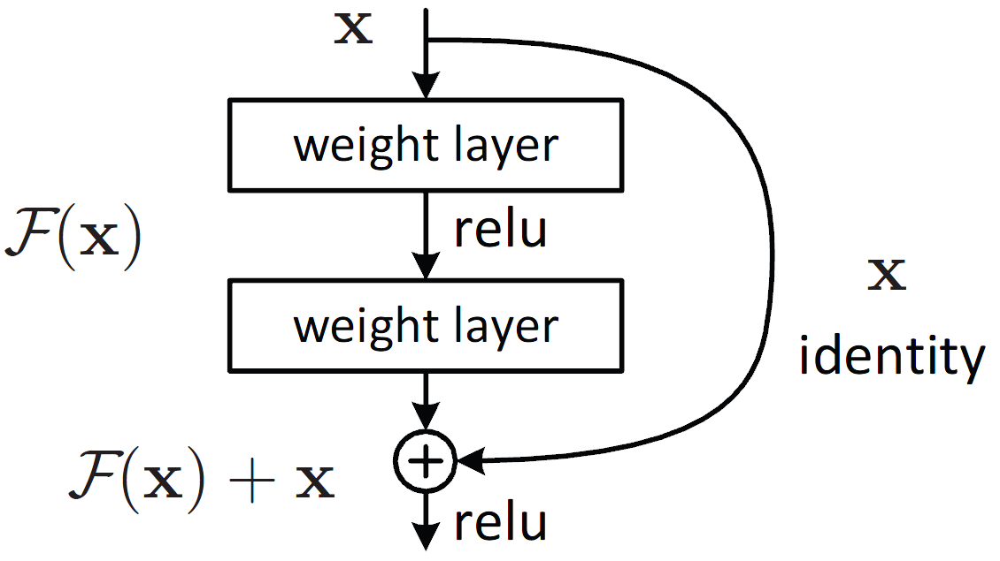
Z3 Residual Connection (Add&Norm) — F(x)+x, identity skip path
Z3 MHA collapsed block — 내부를 열기 전 한 블록
Z3 MHA 컨테이너 내부 (Linear ×3 → Heads ×h → Concat → W_O)
Z5 SDPA 내부 단계 — QKᵀ → Scale → Mask → Softmax → ×V
3-2. Attention 패턴 · Head 시각화 (Z4–Z5)
Z4 Head별 Attention heatmap + bipartite graph
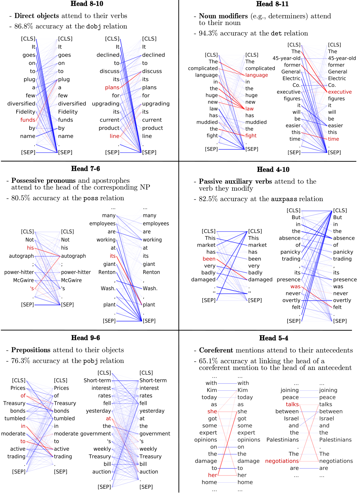
Z4 BERT Head 패턴 6종 (dobj, det, poss, auxpass, pobj, coref)
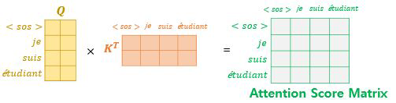
Z5 Q×KT score matrix (컬러)
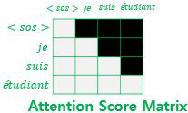
Z5 Causal Mask matrix (하삼각)
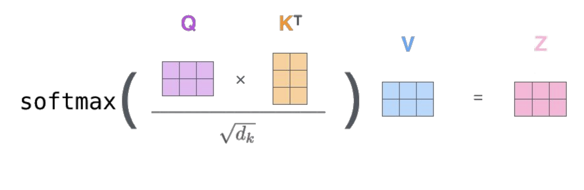
Formula Lock softmax(QKT/√dk)V — 수식 고정 장면 (구조 이미지 아님)
3-3. Self / Cross Attention 계보 (Z4)
Z4.1 Q/K/V Projection overview (Self) — Linear 단위 이미지 아님, projection 묶음
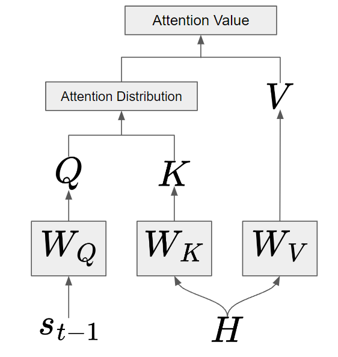
Z4.1 Q/K/V Projection overview (Cross) — Q=st-1, K/V=H
참조 RNN Attention (나는 사과를 좋아해 → I love)
3-4. Seq2Seq · RNN 참조 (Unit 04/06/07)
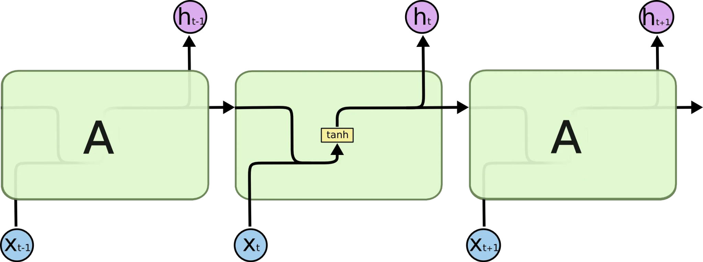
U04 RNN unrolled cells (x_t → tanh → h_t)
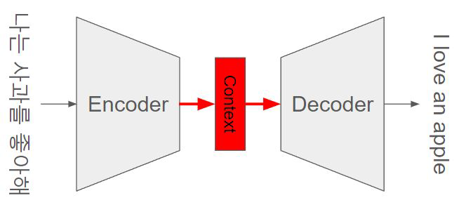
U06 Seq2Seq: Encoder → Context → Decoder
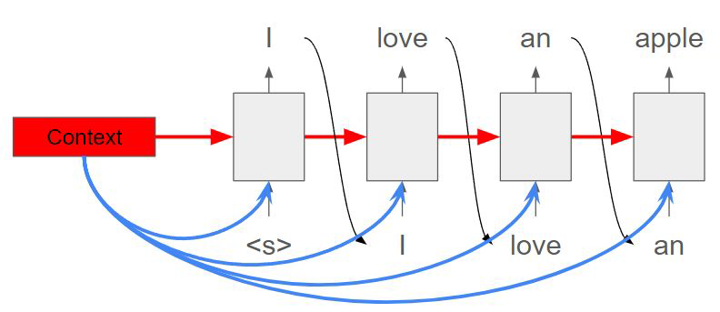
U06/U10 Decoder autoregressive loop
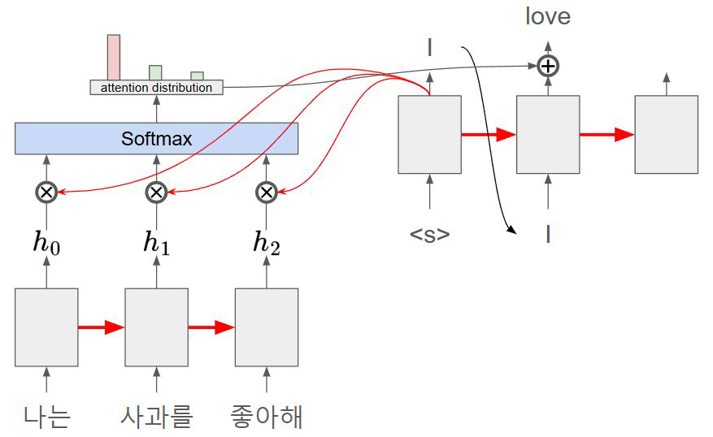
U07 RNN Attention mechanism (h × softmax → weighted sum)
3-5. 수식 참조
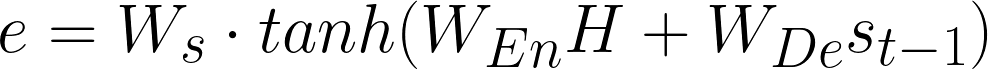
수식 Bahdanau score: e = W_s · tanh(W_En H + W_De s_{t-1})
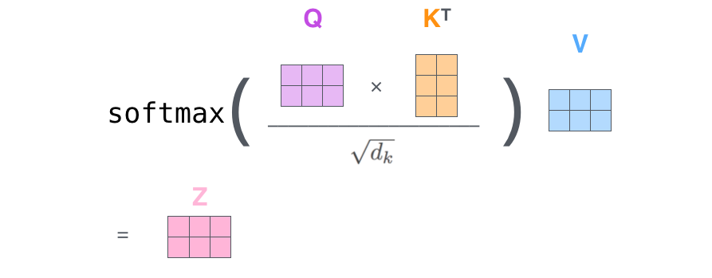
수식 Scaled dot-product: e = Q·KT/√dk
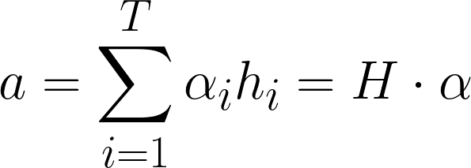
수식 Weighted sum: a = Σα_i h_i = H·α
4. Decoder 추가 차이점 (Encoder 대비)
| 블록 | Encoder | Decoder | 차이 |
|---|
| Self-Attention | source 토큰끼리 참조
+ Padding Mask 가능 | Masked — 미래 토큰 차단
Causal Mask + Padding Mask 결합 | 하삼각 causal mask 추가 |
| Cross-Attention | 없음 | Q = decoder hidden × WQ
K = encoder memory × WK
V = encoder memory × WV
WQ/WK/WV는 decoder cross-attn block의 parameter | 블록 1개 추가
encoder memory = 재료
projection = decoder 내부 |
| Add&Norm | ×2 | ×3 | Cross-Attn 뒤 1개 추가
Post-LN(원논문) / Pre-LN(현대) |
| FFN | 동일 | 동일 | same type, different parameters |
| Output Head | 없음 | Linear → logits → Softmax/probability view
Training: logits → CE Loss (softmax 내장)
Inference: softmax → token selection | Decoder만 보유 |
5. Linear Post-Process 매핑 (P1 상세)
| Linear 위치 | Post-process | 역할 |
|---|
| Q/K/V projection (×3) | no activation | projection — 다른 공간으로 매핑 |
| W_O (output projection) | no activation | head output 섞기 |
| FFN Linear1 | + Activation
ReLU(원논문) / GELU(BERT·GPT) / SwiGLU(최신 LLM) | d_model → d_ff 확장 + 비선형 변환 |
| FFN Linear2 | no activation | d_ff → d_model 축소 |
| Output / LM Head | Linear → logits
Softmax는 확률 표시 / decoding에서 사용 | d_model → |V| vocab projection
Training: logits → CE Loss
Inference: logits → softmax → token selection |